Introducción a ML
Sesión 1
Machine Learning con Python
Cesar Garcia · 2026
Introducción
Objetivos de la sesión
- Comprender qué es el aprendizaje automático (Machine Learning).
- Diferenciar entre aprendizaje clásico y aprendizaje profundo.
- Identificar tipos de problemas: regresión, clasificación, clustering.
- Revisión de algoritmos clásicos:
- Regresión lineal
- KNN
- Árboles de decisión
- SVM
¿Qué es el Machine Learning?
Definición
El Machine Learning permite a los sistemas aprender patrones a partir de datos sin ser programados explícitamente.
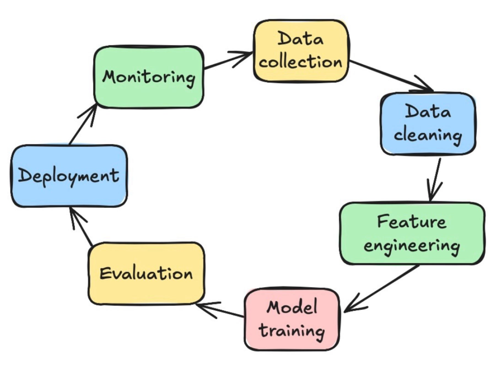
Por qué funciona el Machine Learning
- El ML identifica patrones que no son evidentes a primera vista de los datos.
- Aprende relaciones multivariadas donde cada variable influye en combinación con otras.
- Encuentra fronteras de decisión o reglas matemáticas imposibles de deducir manualmente.
- Aprovecha grandes volúmenes de datos para reducir ruido y generalizar a nuevos casos.
Ejemplo intuitivo
Detección de fraude en tarjetas de crédito:
- No hay una única señal clara de fraude.
- El ML aprende combinaciones sutiles: hora + monto + ubicación + historial + categoría del comercio.
- Los humanos jamás podrían ver todos esos patrones simultáneamente.
Tipos de Problemas
| Tarea | Descripción | Ejemplo |
|---|---|---|
| Regresión | Predicción de valores numéricos. | 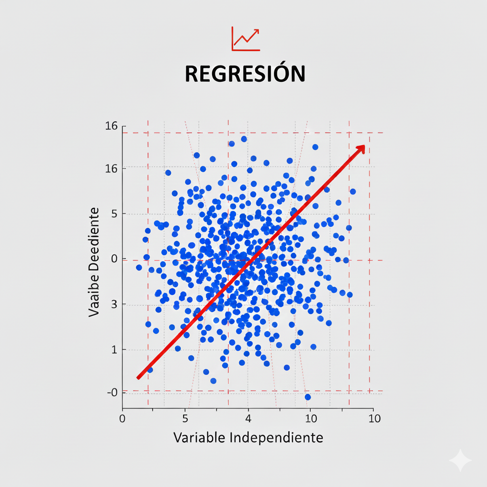 |
| Clasificación | Asignación de categorías. | 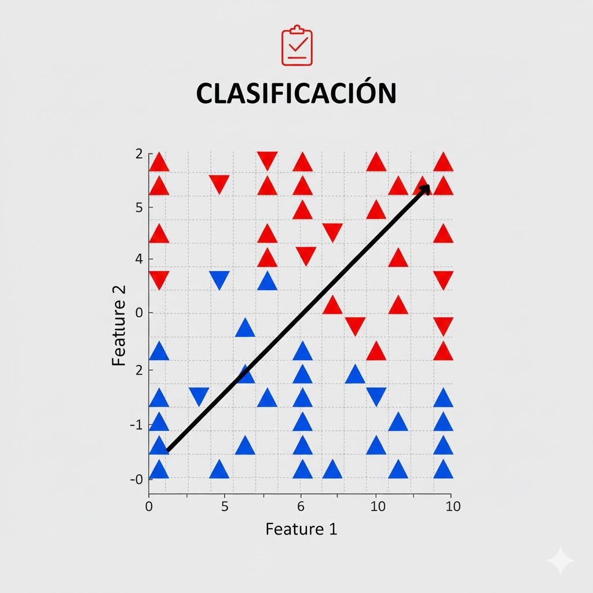 |
| Clustering | Agrupación sin etiquetas. | 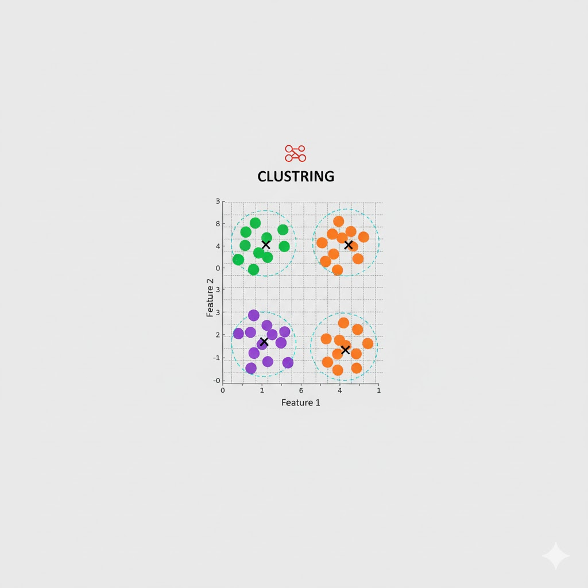 |
| NLP | Procesamiento de texto y voz. | 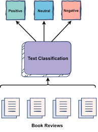 |
Algoritmos de Machine Learning
Algoritmos Clásicos
- Regresión lineal/polinomial
- KNN
- Árboles de decisión
- Random Forests
- Support Vector Machines (SVM)
Deep Learning (Redes Neuronales)
- Redes Feedforward (FNN)
- Convolucionales (CNN)
- Recurrentes (RNN, LSTM)
- Variational Autoencoders (VAE)
- Generative Adversarial Networks (GAN)
- Transformers (ChatGPT, Gemini)
SECCIÓN — REGRESIÓN
Modelos de Regresión
- Regresión lineal
- Regresión polinomial
Regresión lineal – Características
Ventajas
- Muy interpretables: cada coeficiente indica el efecto de una variable.
- Entrenamiento rápido incluso con muchos datos.
- Buena base para entender otros modelos.
Desventajas
- No captura relaciones altamente no lineales.
- Sensible a outliers.
- Supone cierta estructura en los datos (linealidad, homocedasticidad, etc.).
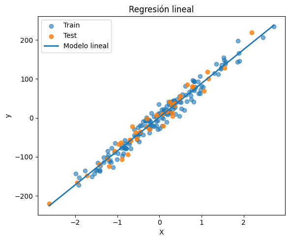
Regresión polinomial
- Idea: si la relación no es lineal, ampliamos las características.
- Ejemplo (una variable): $\hat{y} = w_0 + w_1 x + w_2 x^2 + w_3 x^3$
- En la práctica:
- Creamos nuevas columnas: $( x, x^2, x^3, \cdots )$
- Aplicamos regresión lineal sobre estas características.
- Cuidado:
- Grado muy alto → riesgo de sobreajuste.
- Se suele combinar con regularización (Ridge, Lasso).
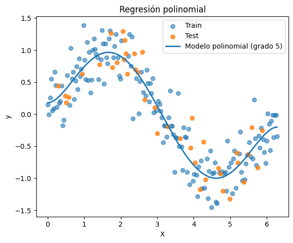
SECCIÓN — KNN
K-Nearest Neighbors
K-Nearest Neighbors (KNN) – Intuición
- No construye una fórmula explícita, sino que memoriza los datos.
- Para predecir un nuevo punto:
- Busca los k vecinos más cercanos en el conjunto de entrenamiento.
- Clasificación: votación mayoritaria entre las clases de esos vecinos.
- Regresión: promedio de los valores numéricos de los vecinos.
- Depende fuertemente de la noción de distancia (normalmente Euclídea).
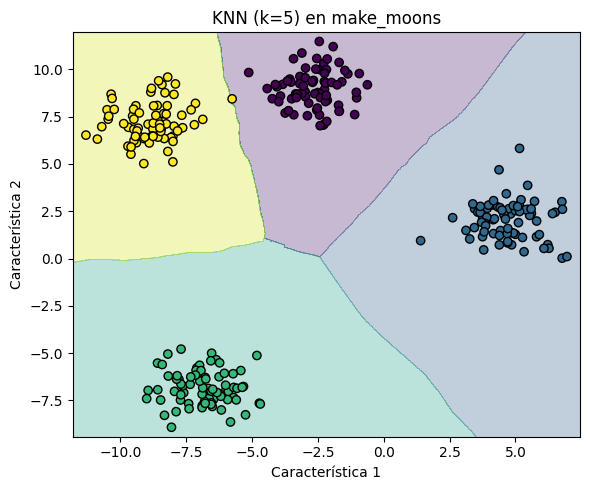
KNN – Ventajas, desventajas e hiperparámetros
Ventajas
- Sencillo de entender e implementar.
- Puede modelar fronteras de decisión muy complejas.
- No necesita entrenamiento costoso (el "costo" está en la predicción).
Desventajas
- Lento para predecir con muchos datos.
- Muy sensible a: escala de las características y elección de k.
- Mal rendimiento en espacios de alta dimensión.
Hiperparámetros clave
- k: número de vecinos.
- k pequeño → sobreajuste.
- k grande → subajuste.
- Tipo de distancia: Euclídea, Manhattan, Minkowski, Coseno.
- Peso de los vecinos: iguales o ponderados por distancia.
SECCIÓN — ÁRBOLES DE DECISIÓN
Árboles de Decisión y Random Forests
Árboles de decisión – Intuición
- Modelo que aprende una secuencia de decisiones tipo "si/entonces".
- Estructura en forma de árbol:
- Nodo interno: condición (ej. "¿edad > 30?").
- Rama: resultado de la condición (sí/no).
- Hoja: predicción final (clase o valor numérico).
- Objetivo: dividir el espacio de características en regiones cada vez más "puras".
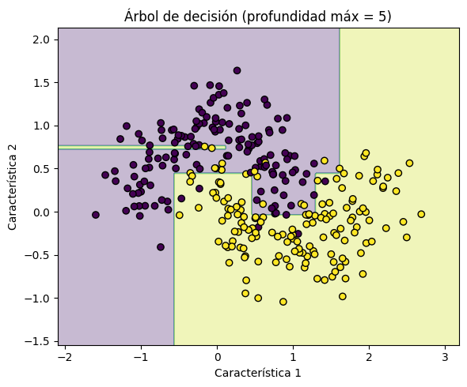
Árboles de decisión – Construcción y características
Construcción
- En cada nodo se prueba dividir por alguna característica y umbral.
- Se mide la bondad de la división: Gini, entropía (clasificación) o MSE (regresión).
- Se repite recursivamente hasta profundidad máxima, mínimo de muestras o sin mejora.
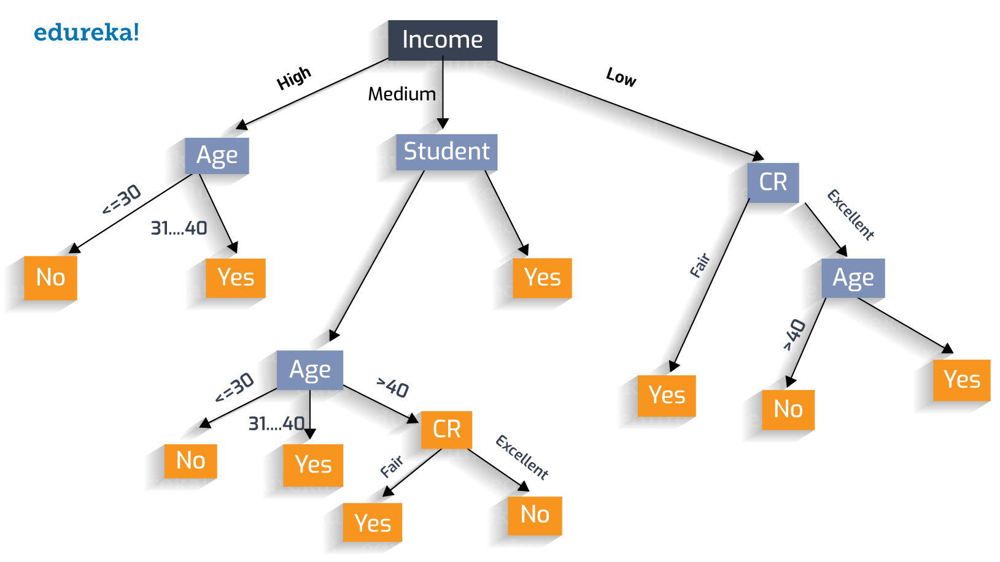
Ventajas
- Muy interpretables (se puede visualizar el árbol).
- Manejan bien variables categóricas y numéricas.
- Capturan relaciones no lineales y efectos de interacción.
Desventajas
- Un solo árbol profundo tiende a sobreajustar.
- Pequeños cambios en los datos pueden generar árboles muy diferentes.
- Menor rendimiento que ensambles.
Random Forests
Intuición
- Un ensamble de árboles de decisión.
- Se entrenan muchos árboles sobre diferentes subconjuntos de datos y características.
- Idea clave: muchos modelos débiles → un modelo fuerte mediante promediado.
Dos fuentes de aleatoriedad
- Bootstrap: cada árbol ve una muestra aleatoria (con reemplazo).
- Subconjunto de características: en cada división se considera sólo un subconjunto aleatorio.

Ventajas / Desventajas
- Buen rendimiento "out of the box".
- Menos sobreajuste que un único árbol.
- Proporciona medidas de importancia de variables.
- Menos interpretable y más pesado que un árbol individual.
SECCIÓN — SVM
Support Vector Machines
Support Vector Machines (SVM) – Intuición
- Problema típico: clasificación binaria.
- Objetivo: encontrar un hiperplano que separe las clases con el mayor margen posible.
- Los puntos más cercanos al hiperplano se llaman vectores de soporte.
- Intuición: entre todas las fronteras que separan las clases, SVM elige la que ofrece más "colchón".
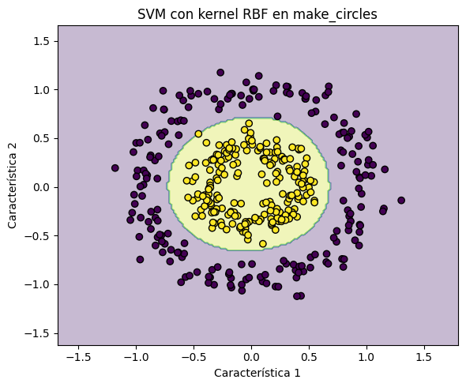
SVM – Margen, errores y características
Margen y parámetro C
- En datos perfectamente separables: se maximiza la distancia entre clases y el hiperplano.
- En datos reales: el parámetro $C$ controla errores permitidos.
- $C$ alto → menos errores, margen más ajustado (riesgo de sobreajuste).
- $C$ bajo → más errores, margen más ancho (mejor generalización).
Ventajas
- Buen rendimiento en problemas con pocas muestras y alta dimensión.
- Puede aprender fronteras de decisión muy complejas (con kernels).
- Basado en un principio teórico sólido.
Desventajas
- Entrenamiento costoso con conjuntos de datos muy grandes.
- Menos interpretable.
- Requiere cuidado al elegir kernel, $C$ y $\gamma$.
Comparación rápida de modelos
| Modelo | Mejor para... | Riesgo principal |
|---|---|---|
| Regresión Lineal | Relaciones simples, interpretable | Subajuste en no lineales |
| KNN | Fronteras complejas | Lento en grandes datos |
| Árboles/Random Forest | No linealidades e interacciones | Sobreajuste (árbol único) |
| SVM | Alta dimensión y no lineal (kernel) | Costoso en datasets grandes |